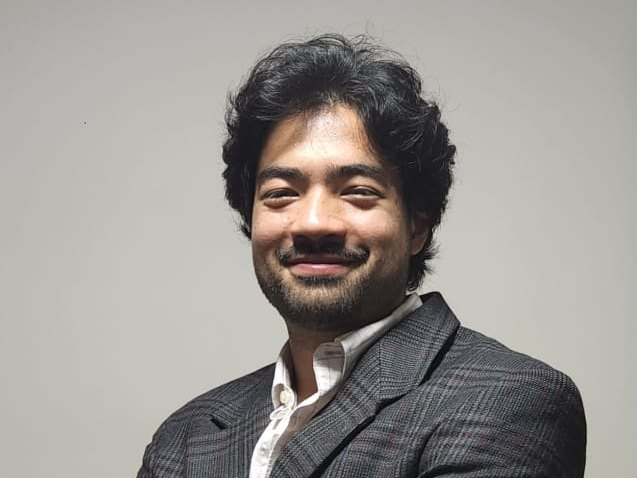

01
Paulo Suen
Direção científica · MD, PhD
Engenheiro, médico e cientista de dados, com doutorado pela Faculdade de Medicina da USP. Atua na fronteira entre clínica, epidemiologia e engenharia de dados.
Atuou em redes municipais de saúde, complexos hospitalares terciários e pesquisa acadêmica, com prática forte em integração de dados de prontuário, laboratório, microbiologia e prescrição em escala hospitalar e municipal.